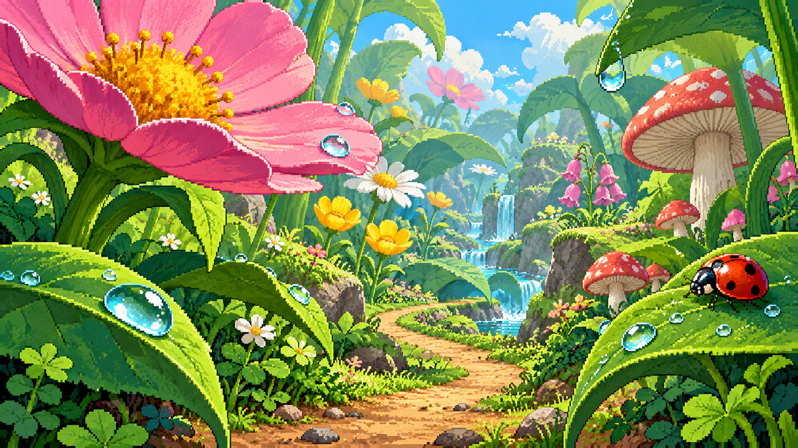

Abeja ninja · boceto de aspecto
Disposición A con la varita-aguijón. Noa-abeja tiene sprites nuevos provisionales (sus poses con peto a rayas, antenas, alas y la varita en la mano) y el tarro de miel es pixel art que se llena con cada flor. A 100 pulsos por minuto, compás de 4.

¡zum!
Néctar: 0
¡Ya!
¡Zas!
Vuelo
Modo
- Poses: espera con la varita adelantada; la alza cuando una flor está a un pulso; corta con un barrido dorado justo en el pulso; celebra cada vez que el tarro sube de nivel.
- Lanzamiento: Melisa se inclina y dice «¡zum!» en el pulso en que suelta la flor; la flor vuela en arco hasta la punta de la varita.
- Corte acertado: la flor se parte en dos y los pétalos caen al tarro. Fuera de tiempo: la flor rebota con un «¡Uy!» amable.
- Sprites y flores son provisionales; el arte final se pintará aparte con estas poses como guía.